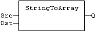
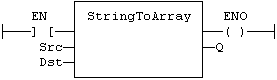

Function
Copies the characters of a STRING to an array of SINT.
|
Name |
Type |
Description |
|
SRC |
STRING |
Source STRING. |
|
DST |
SINT |
Destination array of SINT small integers (USINT for StringToArrayU). |
|
Name |
Type |
Description |
|
Q |
DINT |
Number of characters copied. |
In LD language, the operation is executed only if the input rung (EN) is TRUE. The output rung (ENO) keeps the same value as the input rung. In IL, the input must be loaded in the current result before calling the function.
This function copies the characters of the SRC string to the first characters of the DST array. The function checks the maximum size destination arrays and reduces the number of copied characters if necessary.
Q := StringToArray (SRC, DST);

The function is executed only if EN is TRUE.
ENO keeps the same value as EN.
